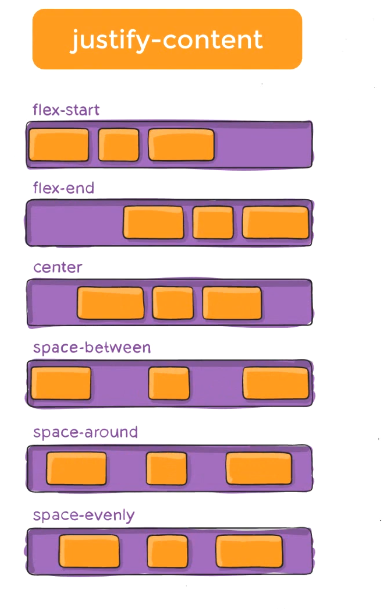
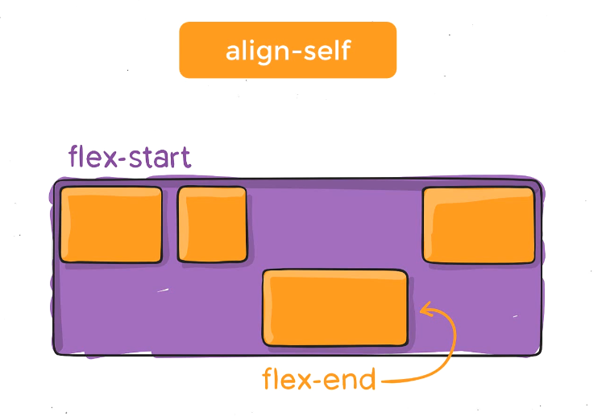

30. Day - 30 -- Bootstrap 5, Part- 6 - Details about Bootstrap v5 Components.
Carousel-11:20
Collapse-16:55
Dropdowns-19:00
List group-20:24
Modal-20:45
Navs and tabs-22:05
Navbar:23:23
Offcanvas:
Pagination-25:23
Placeholders-
Popovers-25:45
Progress-27:37
Scrollspy-28:28
Spinners-28:52
Toasts-29:29
Tooltips-29:50
Day - 32 -- Display Flex Property -- Supper easy way to learn Display Flexbox Property
1
2
3
4
5
6
7
<8/p>

9
10
11
12
13
14
15
16
17